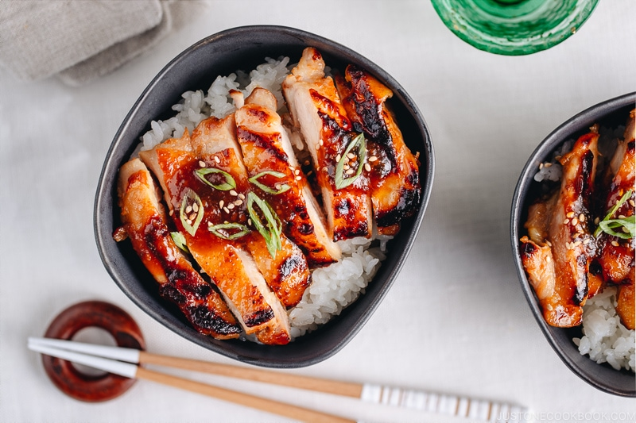

Homepage
Miso Chicken

Description
Chicken marinated in a compound dressing of unsalted butter, and miso paste.
Ingredients
- 4 tbsp unsalted butter, softened
- 1/2 cup white miso
- 2 tbsp honey
- 1 tbspn rice vinegar
- Black pepper, to taste
- 8 skin-on, bone-in chicken thighs, approximately 2 1/2 to 3 pounds
Steps
- Heat oven to 425 degrees.
- Combine butter, miso, honey, rice vinegar and black peppar in a large bowl and mix with a spatula or spoon until it is well combined.
- Add chicken to the bowl and massage the miso-butter mixture all over it.
- Place the chicken in a single layer in a roasting pan and slide it into the oven.
- Roast for 30 to 40 minutes, turng the chicken pieces over once or twice, until the skin is golden brown and crisp, and the internal temperature of the meat is 160 to 165 degrees.